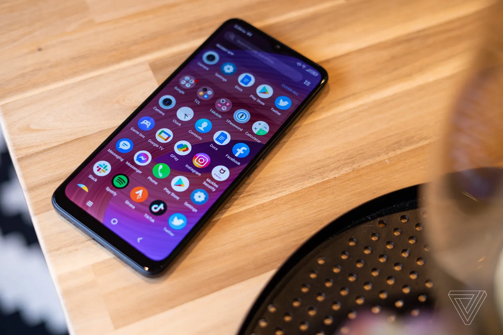
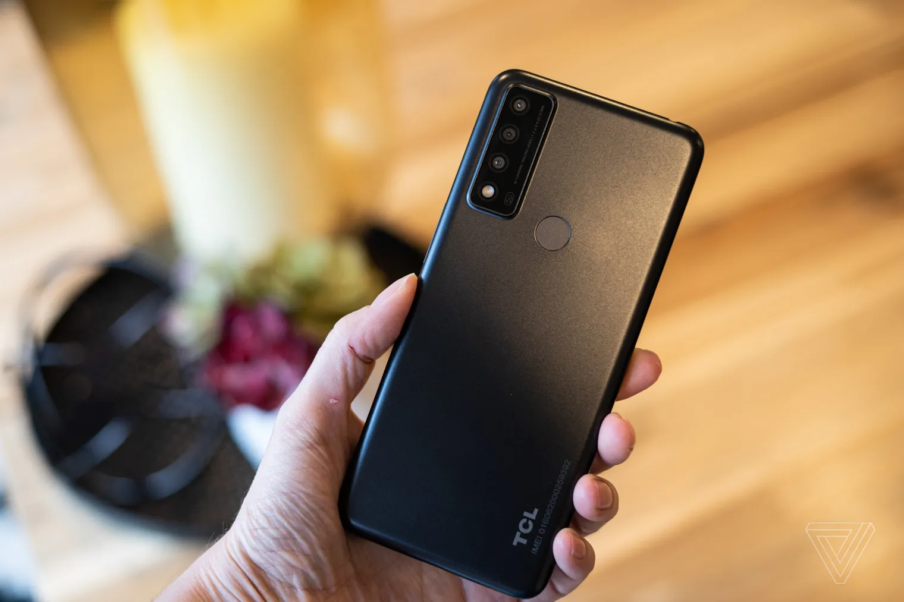

TCL 30 XE 5G REVIEW: NOT BAD FOR $200
TCL’s inexpensive phone offers decent performance, access to T-Mobile’s good 5G network, and not much else
The TCL 30 XE has a bad screen, skimpy storage, lackluster camera, and runs a version of Android that’s
nearly two years behind everyone else. It’s basically a slightly cheaper, slightly worse version of the
Samsung Galaxy A13 5G that only works on T-Mobile. But it’s $200, and at that price, it’s about the best
phone you can get.
For a $200 phone, the 30 XE 5G’s day-to-day performance is snappier than I expected. That’s also a low price
to pay for 5G service on T-Mobile’s very good network. These things make it easier to forgive the 30 XE’s
weak points because it does what a good budget phone should: it just works. If you really want 5G, are
paying full price, and need to keep costs down, it’s the best you’re going to get on T-Mobile. But if you’re
eligible for one of your carrier’s “free” phone offers, there’s certainly a better option among them.
The TCL 30 XE uses a MediaTek Dimensity 700 processor and 4GB of RAM, which is on the low side even by
budget phone standards. Even so, jumping from app to app is quick. It’s not perfect — there are infrequent
but noticeable hesitations here and there. As I go about my scrolling and typing, I generally just don’t
notice the 30 XE getting in my way. The phone’s 64GB of built-in storage is definitely on the low side, so
budget an extra $15–25 for a microSD card.
Battery life is another bright spot. The 30 XE’s 4,500mAh battery isn’t the biggest by any means, but
overall, the device is fairly power-efficient. Light users who spend the majority of their time on Wi-Fi
will get very good performance — well into a second day on one charge. It should also stand up to heavier
use, but I’d only expect to get through a single day.
Unfortunately, that healthy battery stamina is likely thanks to the relatively dim low-resolution screen.
The 30 XE offers a 6.52-inch LCD screen, which would be fine — LCDs have poor contrast compared to their
pricier OLED counterparts, but you’re not going to find an OLED screen on a $200 phone — but it happens to
be a bad LCD. For starters, it’s just 720p resolution, which is really not enough for a screen this big.
Icons and images look a little rough around the edges. It’s also just not very bright. Using it next to a
window on a mostly overcast day sent the automatic brightness to 100 percent just to keep the screen
comfortably visible.

That said, the screen’s 90Hz refresh rate is noticeably smoother than the standard 60Hz. It contributes to the
phone’s overall feeling of responsiveness, so it’s nice. But, personally, I’d rather have a screen with adequate
resolution and a standard refresh rate than a smoother-scrolling but low-res panel.
For a carrier-locked device, the 30 XE includes mercifully few pre-downloaded T-Mobile apps, most of which can
be uninstalled (or skipped altogether during setup). That was not the case with Verizon’s TCL 30 V 5G, which I
reviewed earlier this year. The 30 XE also supports T-Mobile’s very good mid-band Ultra Capacity 5G network,
which is included on all of T-Mobile’s 5G plans — also not the case at Verizon, where you need a pricier
unlimited plan to access the best 5G bands.
The 30 XE ships with Android 11 installed, which is well behind the times given that Android 13 is just around
the corner. TCL spokesperson Isabelle Braun says the phone will get an update to Android 12 but didn’t say when.
The company is also promising just two years of security updates for the 30 XE. That’s not long, but it’s not
totally unexpected for a $200 phone, unfortunately.
TCL claims the 30 XE 5G has a “triple rear camera system,” but that’s being a little generous. There’s a
13-megapixel main camera, 2-megapixel depth camera, and a 2-megapixel macro camera. The depth camera’s only
purpose is to provide more information for portrait mode (which isn’t very good), and the macro camera’s images
are (predictably) low res and mediocre.
That leaves the main rear camera and an 8-megapixel front-facing camera, both of which do enough to get a
passing grade. In bright light, they produce very saturated, almost fluorescent colors. None of the filters
available in the native camera app tone this down very much, so that’s something you’ll have to either prefer or
make peace with. This contributes to some weird-looking results in mixed lighting, too.
Dim indoor lighting and very low light are challenging for the camera. Shots are often blurred due to low
shutter speeds, autofocus hunting, noise reduction, or a combination of the above. You can get usable shots of
static subjects, but forget about pets and kids — moving subjects in low light are a challenge for even the best
smartphone cameras. Video recording is available at up to 1080 / 30p, and clip quality is unremarkable.

The TCL 30 XE 5G does just what a budget phone should do: for the most part, it gets out of your way. For a
phone at this price, its performance is snappy, and that’s a major benefit if you’re looking to just live your
life with as little frustration as possible from your mobile device. But if you want a little more from your
phone, you have some other options to consider.
The Samsung Galaxy A13 5G has very similar specs to the 30 XE 5G: the same processor and RAM, same 64 GB storage
with a microSD slot, and a similarly sized 720p screen. It costs a bit more outright, but it offers a bigger
battery and a better camera. Samsung’s software is a little further from stock Android than TCL’s, which means a
little more clutter and pre-downloads. At the time of this writing, it’s also another $0 / month option from
T-Mobile if you buy it on contract. If my free upgrade were at stake, I’d opt for the Samsung
Speaking of free phones, if T-Mobile is offering the OnePlus Nord N20 5G, then that’s an even better option. It
has a better camera, an excellent OLED screen, and fast charging. Though at $282, it’s basically in another
price bracket if you’re paying for it outright.
Finally, if you can take or leave 5G and buying an unlocked phone outright is an option, then the unlocked
Motorola Moto G Stylus (2022) is worth considering. You’ll get better battery life and an additional year of
security updates. It’s still quite a bit pricier with a $299 MSRP, but it’s almost always marked down well below
that; it’s $250 at the time of this writing.
The TCL 30 XE 5G is a budget phone that will get you through your day with as little hassle as possible given
the price. It’s a good fuss-free option if you’re paying full price up front and want to keep costs as low as
possible. But, if you’re subsidizing your purchase by signing a wireless contract, then you can do better.